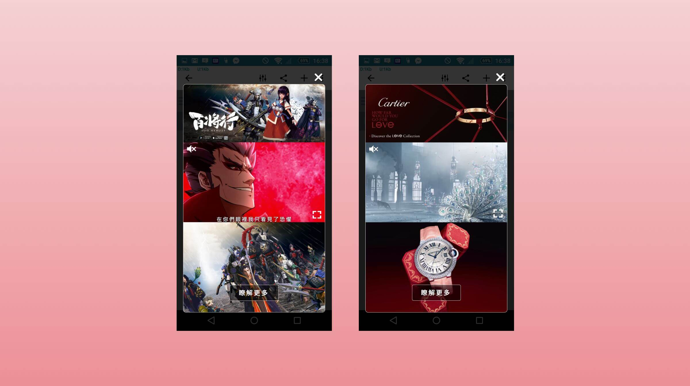

Creative video Ad solutions.


Responsibility
My major duty of this project was creating new video formats and formulating well-thought UI spec, making sure the contents could be adapted to various devices in responsive consideration.
Creative Contents

Flexible Video Banner
Native Video Card
Interstitial Video Show
UI Set

Responsive UI Specification


Review
There are lots of details I have learned when I created these video Ad formats. For the purpose of satisfying the Ad SDK's needs, the formats have to fit various devices, different layouts and make it looks like native contents. As the saying goes, "The devil is in the details.", the most valuable and challenging part is not how stunning the format is, but how to get the balance between business purpose and beautiful design.